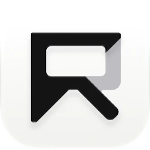
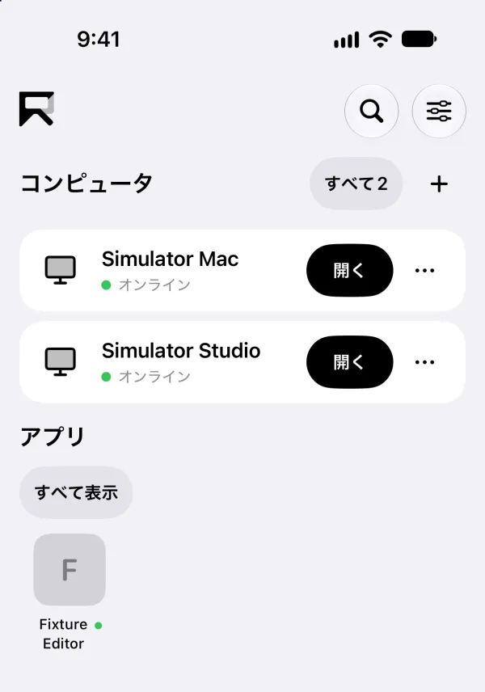
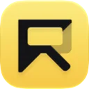

Desktop — the whole Mac screen
See and control your Mac’s entire desktop. Zoom in when you need to see the details.

Remote desktop for iPhone and iPad
Remones lets you control your own Mac from an iPhone or iPad. Don’t just watch the screen — work in your Mac apps with a keyboard and trackpad, the way you normally would.
Requires iOS / iPadOS 18 or later. The Mac you control (macOS 15 or later) runs the companion Mac app, Remones Host.

More than a mirrored screen. Open individual apps and windows so they stay usable on a small display.
See and control your Mac’s entire desktop. Zoom in when you need to see the details.
Pick one Mac app and Remones fits its window to your iPhone or iPad screen. You can adjust the text size too.
Keep your home Mac and your work Mac side by side and switch between them. Apps from a Mac you’ve connected to stay on Home even while it’s offline.
The Shelf gathers open windows, apps and your other Macs, so you can jump from the current screen to another window in a moment.
Keyboard and trackpad input are supported. Text you copy on your iPhone can be pasted on the Mac from Input in the session menu.
Play your Mac’s sound on your iPhone. With Picture in Picture, keep an eye on your Mac while using other apps.
Search windows, apps, workspaces and computers. If you allow it on the Mac, you can search file names on the Mac too.
With a VPN such as Tailscale, connect the same way from outside your home network. See how
The first time you connect, compare the code shown on your iPhone and your Mac, then approve on the Mac. Connections are encrypted.
Remones follows the light and dark appearance of your iPhone and iPad — and so does this page.

Screenshots were taken from a development build in the Simulator with the Japanese interface. The released app may differ.
Remones has no developer-run relay servers and no accounts. Your iPhone and your Mac connect directly.
Traffic goes over your local network or a VPN you set up. Screen, audio and input never pass through Remones servers.
There is no Remones account to create, and no email address to give.
On first connection, check the six-digit code on both screens and approve on the Mac. Connections use TLS.
No advertising or third-party analytics SDKs are built in, and logs are never uploaded automatically.
Remones Plus is a subscription that lets you choose the app icon and the matching in-app accent colour. Standard and Lemon are free.

Remones Plus is optional. Prices and free-trial terms are shown on the App Store and in the app’s purchase screen.
Install Remones Host on the Mac you want to control.
About the Mac appAllow Screen Recording to share the screen, and Accessibility to control the Mac.
About permissionsChoose your Mac in Remones, check the code, and approve on the Mac.
Setup guideThe Remones app itself. Finds your Mac, connects, and lets you control it.
The companion app for the Mac you control. It accepts connections from your iPhone or iPad and streams the screen and sound.